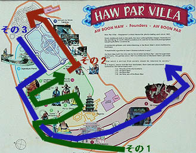 ハウパーヴィラ その１
ハウパーヴィラ、虎豹別墅はシンガポール市街から西に数キロのところにある。 テーマパーク時代には入場料を取っていたそうだが今は無料。「FREE ADMISSION」の看板が眩しい。 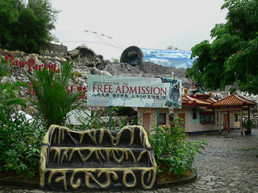 一歩入ればそこは独自の色彩と造形の天国、タイガーバームパワー大炸裂である。 テーマパークから無料の公園に模様替えしたとの事でメンテナンス一切無しの放置プレイが心配されたが、ペンキの塗り直し等、きちんとやられている様子で一安心。 香港でもお馴染みだったカラフルな人工築山に点在するキテレツな動物や人や建物などなど、小生、早くも前のめり気味で何故か小走り。 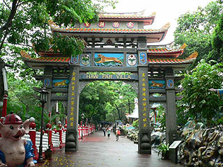 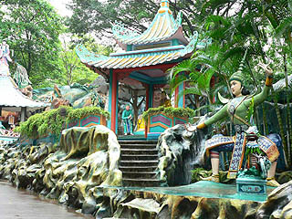 この築山のドロッとした視覚的質感が堪らない。岩とか山というより何かもっと別の物質、例えばゼリーで出来た世界の中を歩いているような奇妙な気分になってくる。 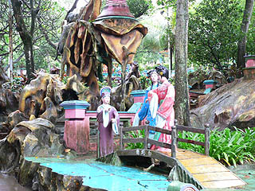 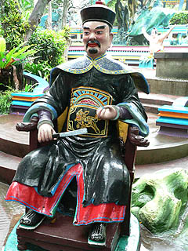 雨が激しくなって来たので胡一族の翡翠コレクションを展示している翡翠博物館に入る。その中にあった胡文虎（右）と胡文豹（左）の写真。 おお、アジアの珍寺尊師よ。ウルトラハイパーリスペクトっす。 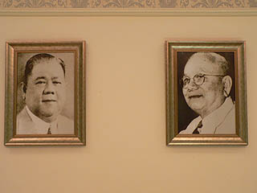 で、外に出るといきなりお相撲さんです。これは胡文豹の死後、息子のAwChengChyeという人が作らせたそうな。1950年代の後半の事らしい。 半世紀が経ったとは思えない程、奇麗な仕上がりだ。熱帯であるこの地の気候を考えたら、相当メインテナンスをマメにしているのだろう。 オットセイの家族は強精のシンボルっていう事？ 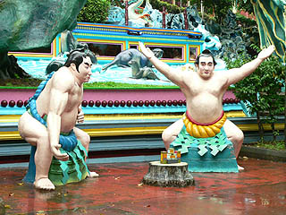 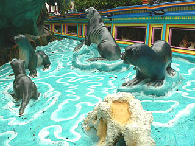 入場から十数分、すでに色彩感覚が麻痺し、脳髄がとろけかかって来た。うううう。チョ〜気持ちいい〜！ 対面の仏陀の上にあるUFOみたいな笠も尋常じゃなく凄いぞ。 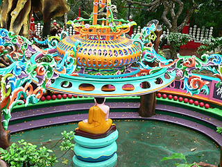 最早、自由の女神が何でここに！というツッコミも意味を成さない程、色彩炸裂しまくり。 その向こうには緑の人工築山に沢山の彫像が。しかも階段が付いていて中に入ったりできるのが嬉しい。 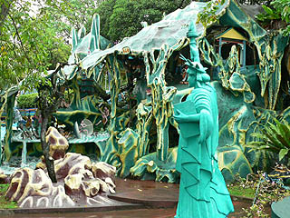 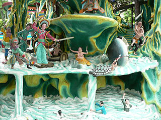 築山には海があしらわれている。しかも上下2段構成。この後、いくつかの大型の築山があるが、この2段構成モノが多かった。 上は天界、下は下界という事なのだろう。上段では激しい水上バトル、下段では人が溺れかけている。白蛇婦人が夫を助け出そうとして海の妖怪と共に洪水を起して戦うという伝説のいちシーンだ。 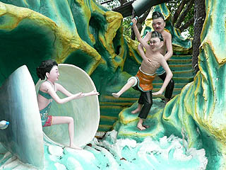 「こっ、このハマグリ女がっみんな悪いんだあ〜！」 自由の女神の後ろには池がありその中に六角の東屋が建っている。東屋の中にはタイ風のコンクリ仏が置かれている。 ６つの壁面にはそれぞれ違う半立体のジオラマが。こういう細かいところまで造り込まないと気が済まないタイプなのだろう。OKですよお〜！ 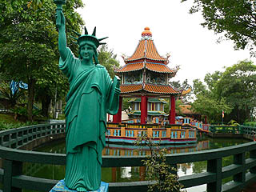 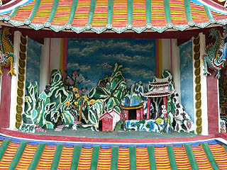 その隣には天辺に大仏を乗せたパゴダ。普通の寺ではまず見られない突飛な造形だが、凄くカッコいい。 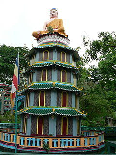 このパゴダは1937年の開園当時からあったものだがその後、1954年に胡文虎が大仏を造らせた。これが胡文虎最後の普請だったという。 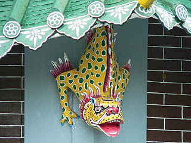 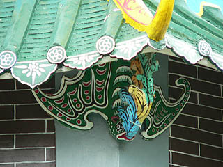 パゴダの軒下の怪獣も各層で違うデザイン。しかもみんな色違い。そして派手。 池の裏手には門があり、横には福禄寿の御三方が皆さんの幸せを一生懸命・・・見てるだけ。 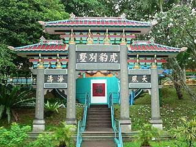 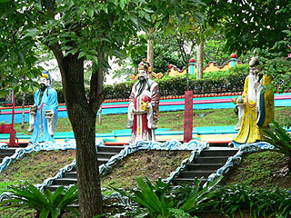 不必要なまでにスぺーシーな東屋。でも雨が降っていたので助かったりもした。ベンチも油断ならない。 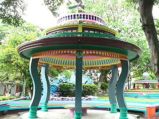 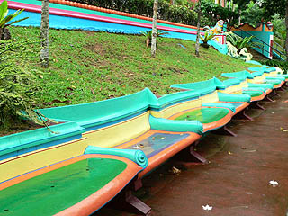 どこかから視線を感じ、ふと足元を見ると・・・うおっ！虎じゃないっすか！ 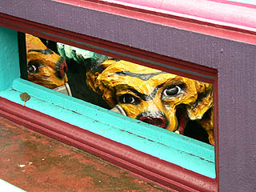 虎は地面より少し下の方にいてそこへ下りていく階段がある。下りていってみると・・・ 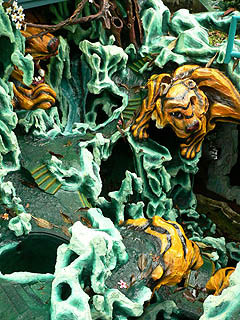 こんな感じです。しかも水まで流れていてその先は人工洞窟になっているのだ。ここの虎グロッタはかなりダイナミックだった。 写真を見ると、「虎、すっげえデカいじゃん！」とか思われるかも知れないが、写真に写っている階段は実はミニチュアの階段なので虎の大きさは等身大位なのである。 これは縮景というのだろうか、中国では盆石に小さな階段や建物や人物を配して大きな山に見立てたりするが、それと同じ手法と考えていいだろう。しかし、その風景の中に本物の階段が混ざっていたりするので、その階段を登ったり下りたりしていると自分が縮景の中に入り込んだような気分になるから不思議だ。 そういえば香港のタイガーバームガーデンや香港の寺では、このような中華グロッタを良く見たが、シンガポールやマレーシアの寺では（ココ以外では）全く見かけなかった。これも地域性というかお国柄なのだろうか？ 続いてはお嬢さんと爺さまのバトル。後ろの銅鑼持ったお嬢ちゃんが戦意を高揚させます。 と思ったらコレは薬売りのデモンストレーションだそうな。後ろの黄色い看板には薬の効能が書かれている。勿論売るのは萬金油といったところか。右は薬の事を訪ねるのに夢中な奥様。坊ちゃんがズロース引っ張って半ケツになっても気にしない程、真剣に聞き入っている。こーゆーパターンだとやっぱり買っちゃうんだろうなあ〜。 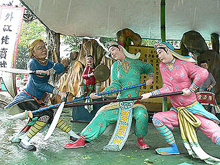 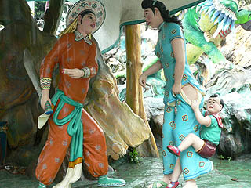 お次は虎退治の図。やる方もやられる方も真剣です。 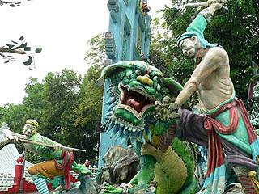 ぐにゃりと歪んだ奇想世界はまだまだ続く。 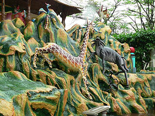 園内には意味も無く（いや、もしかしたら何かの深遠なるメタファなのかも知れないが）動物の彫像が点在していたりもする。 猿がぐちゃぐちゃいる花果山の図。 岩から産まれた猿、といえばいわずと知れた孫悟空。その元になった伝説のシーンである。 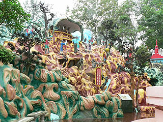 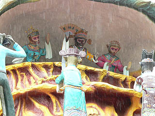 猿山の頂上にはボス猿がいる。「唯吾独尊」と書かれた扇子を持ってまさにお山の大将気取り。これが孫悟空のモデル。 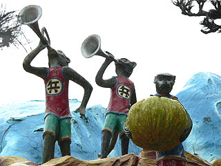 周りには兵隊なんでしょう、兵マークの猿達がたくさんいる。 この猿山シーンはこの後に続く虎印1000パーセントの壮絶な立体絵巻へのイントロダクションでもあるのだ。 続きはこちら
ハウパーヴィラホーム ハウパーヴィラその１ ハウパーヴィラその２ ハウパーヴィラその３ 馬来半島珍寺伝説
珍寺大道場 HOME